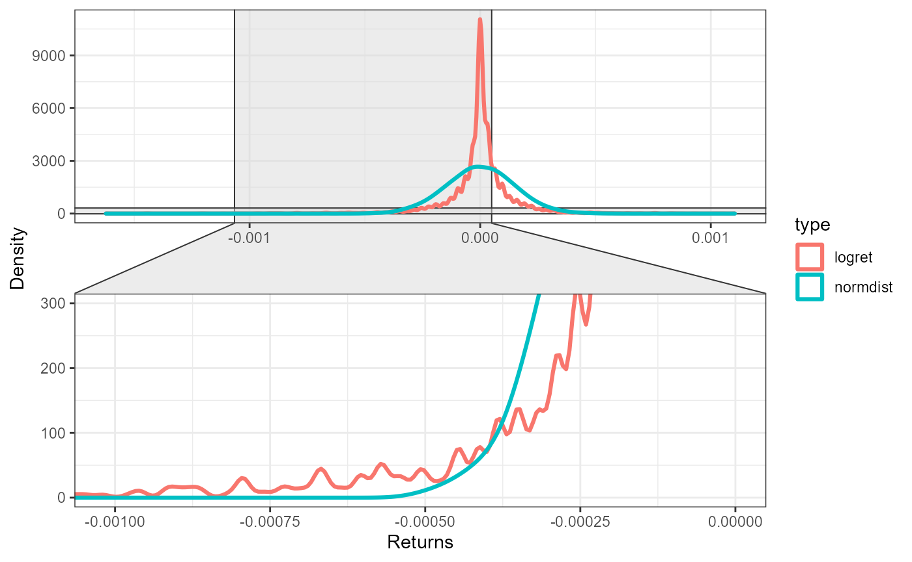
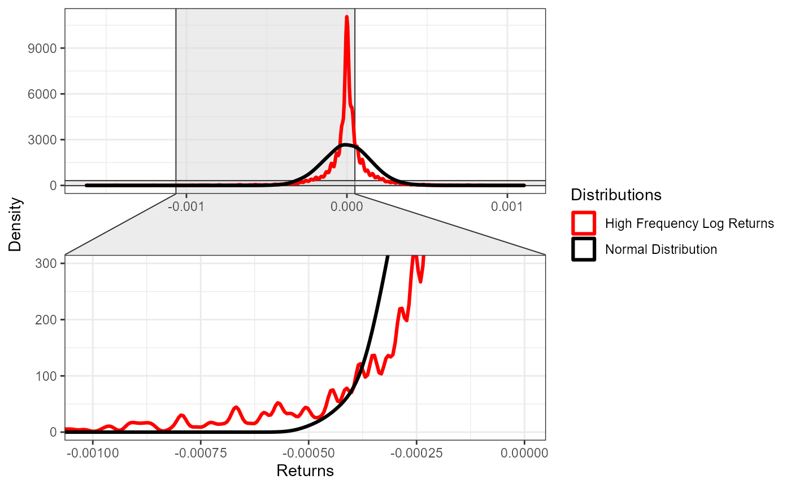

test.Rmd
options(tidyverse.quiet = TRUE)
library(ggecon)
library(tidyverse)
library(ggplot2)
library(highfrequency)
library(xts)
library(ggforce)
quotes <- highfrequency::sampleQData %>% highfrequency::aggregateQuotes(alignBy = "seconds",alignPeriod = 5)%>% select(DT,ret = MIDQUOTE)
log_returns <- as.xts(quotes) %>% highfrequency::makeReturns()
normal_dist_logret <- rnorm(length(log_returns),
mean= mean(log_returns),
sd = sd(log_returns))
dist1 <- log_returns %>% as.data.frame() %>% remove_rownames() %>% mutate(type = "logret")
dist2 <- normal_dist_logret %>% data.frame(ret = .) %>% mutate(type = "normdist")Basic version:
compare_distributions(dist1,dist2,zoom_tail = "left") 
Add ggplot syntax:
compare_distributions(dist1,dist2,zoom_tail = "left") +
scale_color_manual(name = "Distributions",
values = c("logret" = "red",
"normdist" = "black"),
labels = c("High Frequency Log Returns","Normal Distribution"))